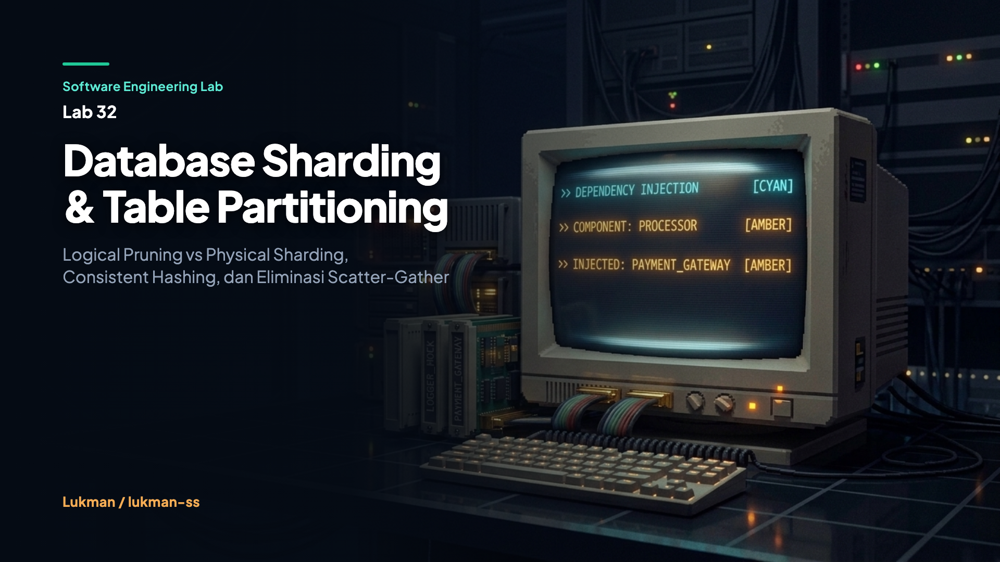

Setiap database relasional monolitik memiliki batas fisik yang pasti: kapasitas throughput I/O disk, batasan memori RAM untuk buffer pool, dan perebutan lock transaksi pada CPU server tunggal. Saat volume transaksi harian melompat dari ribuan menjadi puluhan juta baris data, pendekatan vertical scaling (menambah spesifikasi mesin server) menjadi sangat mahal dan pada akhirnya menyentuh batas fisik hardware.
Arsitektur sistem terdistribusi menawarkan dua strategi utama untuk mengatasi hambatan tersebut: Logical Table Partitioning dan Physical Database Sharding. Pemahaman terhadap perbedaan fundamental kedua mekanisme ini, serta ketelitian dalam memilih sharding key dan algoritma routing, menentukan apakah infrastruktur database mampu tumbuh linear atau justru menciptakan downtime katastropik saat proses scale-out.
Dua konsep ini sering disamakan karena keduanya membagi kumpulan data besar menjadi segmen-segmen yang lebih kecil. Namun, lokasi eksekusi dan implikasi operasionalnya sangat berbeda:
| Dimensi Perbandingan | Logical Table Partitioning | Physical Database Sharding |
|---|---|---|
| Topologi Node | 1 instance database fisik | N instance database otonom terpisah |
| Tujuan Arsitektur | Optimasi I/O engine & manajemen lifecycle data | Horizontal scaling melampaui batasan 1 mesin server |
| Operasi Cross-Table JOIN | Didukung penuh secara native oleh engine | Tidak didukung native; membutuhkan broadcast atau co-location |
| Strategi Primary Key ID | Cukup menggunakan native auto-increment engine | Wajib ID terdistribusi (UUIDv7 atau Sequencer terpusat) |
| Transparansi Aplikasi | Sangat transparan (ditangani query planner internal) | Aplikasi atau middleware proxy mengelola aturan routing |
Salah satu kesalahan fatal dalam perancangan sharded database adalah memilih atribut yang bernilai menaik secara teratur (monotonik) sebagai shard key, misalnya kolom timestamp created_at atau primary key auto-increment. Ketika router menggunakan rentang nilai monotonik untuk menentukan penempatan shard, seluruh transaksi penulisan data baru (write operations) akan dialirkan ke satu shard yang menampung rentang waktu paling mutakhir.
Dalam pengujian demonstrasi Lab 32, kami mensimulasikan 1.000 operasi penulisan data pelanggan ke dalam kluster berisi 4 shard fisik:
[Skenario A] Monotonic Key (date-string) Sharding:
Node shard-0: 0 records
Node shard-1: 0 records
Node shard-2: 1000 records [##############################]
Node shard-3: 0 records
Hasil: Terjadi Severe Write Hotspot! 100% write menumpuk pada shard tunggal.
[Skenario B] High-Cardinality Key (user_id) Sharding:
Node shard-0: 400 records [############ ]
Node shard-1: 0 records
Node shard-2: 200 records [###### ]
Node shard-3: 400 records [############ ]
Hasil: Distribusi penulisan tersebar merata di seluruh shard fisik.Shard key ideal harus memiliki tiga kriteria utama: high-cardinality (memiliki variasi nilai unik yang masif), non-monotonic (tidak bertambah secara sekuensial linear), dan query alignment (sering digunakan dalam filter pencarian agar routing point-lookup dapat langsung mengarah ke satu shard target).
Router kluster bertugas memetakan key masukan ke identifier shard fisik tertentu. Pemilihan algoritma routing menentukan kompleksitas operasional saat melakukan penambahan server baru (scale-out).
Pendekatan paling dasar adalah menggunakan modulus jumlah shard: hash(key) % N. Meskipun eksekusinya instan O(1), algoritma ini sangat rapuh terhadap perubahan kapasitas kluster. Ketika jumlah node bertambah dari N menjadi N+1, pembagi modulus berubah untuk seluruh dataset. Fraksi perpindahan data yang terdampak mencapai N / (N + 1).
Saat kluster bertambah dari 4 menjadi 5 node, 79,84% data harus dipindahkan ke node yang berbeda:
Cluster Resize: 4 Shards -> 5 Shards (Total Keys: 10000)
Hash Modulo (N % M) Keys Remapped : 7984 / 10000 (79.84% data berpindah)Consistent Hashing memetakan node dan kunci data ke dalam sebuah ring sirkular berkapasitas 2^64 - 1. Ketika sebuah node baru disisipkan ke dalam ring, node tersebut hanya mengambil sebagian rentang kunci dari node tetangga terdekatnya. Secara matematis (berdasarkan riset Karger dkk., 1997), rata-rata kunci yang berpindah dibatasi hanya sebesar ~1 / N.
Untuk menghindari ketimpangan beban (data skew) ketika jumlah node fisik masih sedikit, setiap node fisik diduplikasi menjadi 100 hingga 150 virtual nodes (vnodes) yang tersebar acak di sepanjang ring:
func (ch *ConsistentHashRouter) GetShard(key string) (string, error) {
ch.mu.RLock()
defer ch.mu.RUnlock()
if len(ch.ring) == 0 {
return "", ErrNoShardsAvailable
}
h := hashKey(key)
idx := sort.Search(len(ch.ring), func(i int) bool {
return ch.ring[i].hash >= h
})
if idx == len(ch.ring) {
idx = 0 // Wrap-around ke awal ring sirkular
}
return ch.ring[idx].shardID, nil
}Hasil pengujian Lab 32 membuktikan bahwa pada penambahan node dari 4 ke 5, Consistent Hashing hanya memindahkan 12,00% data. Mekanisme ini memangkas migrasi data dari 79,84% menjadi 12,00%, menjaga kestabilan jaringan produksi saat kluster diperluas.
Tantangan klasik pada database sharded muncul saat aplikasi perlu melakukan pencarian berdasarkan atribut yang bukan merupakan shard key. Sebagai contoh, jika data pelanggan di-shard berdasarkan tenant_id, bagaimana cara aplikasi mencari akun berdasarkan email?
Router mengirimkan permintaan query ke setiap shard secara bersamaan menggunakan konkurensi goroutine di Go, mengumpulkan hasilnya, dan menggabungkannya kembali sebelum merespons klien. Pola ini membebani seluruh armada server (CPU dan koneksi) karena setiap node dipaksa melakukan pemindaian tabel lokal untuk menemukan satu baris data.
Arsitektur enterprise seperti Vitess menggunakan tabel pemetaan sekunder terpisah (Lookup Vindex) yang menyimpan relasi email -> tenant_id. Sebelum mengeksekusi query, router terlebih dahulu memeriksa index ini secara langsung, lalu melakukan direct route ke shard tujuan.
Scatter-Gather Query (by Email without Shard Key):
Nodes Broadcasted : 4 / 4
Records Matched : 1
Execution Time : 128.042 µs
Global Secondary Index (Lookup Vindex) Query:
Nodes Broadcasted : 1 (Direct Point Lookup via Shard Key mapping)
Record Found : ID=usr-342, Email=user_342@company.com, ShardKey=tenant-42
Execution Time : 1.375 µs (GSI menghindari broadcast overhead)GSI memangkas durasi pencarian dari 128 µs menjadi 1,37 µs (peningkatan efisiensi 93 kali lipat), dengan trade-off berupa overhead penulisan ganda (double-write) saat proses insert baris baru.
Mekanisme AUTO_INCREMENT bawaan database tunggal tidak dapat digunakan pada kluster multi-node karena ketiadaan sinkronisasi global antar node akan menyebabkan tabrakan primary key. Lab 32 mendemonstrasikan dua strategi solusi:
u1 < u2), mencegah fragmentasi index B-Tree pada media penyimpanan.Seluruh modul diuji menggunakan Go standard library dengan flag pendeteksi kondisi balapan (race detector):
go test -race -v ./...
=== RUN TestPartitionPruning
--- PASS: TestPartitionPruning (0.00s)
=== RUN TestRoutingAndConsistentHashRelocation
sharding_test.go:107: Hash Modulo moved 3756 / 5000 keys (75.12%)
sharding_test.go:108: Consistent Hash moved 800 / 5000 keys (16.00%)
--- PASS: TestRoutingAndConsistentHashRelocation (0.02s)
=== RUN TestClusterScatterGatherAndGSI
--- PASS: TestClusterScatterGatherAndGSI (0.00s)
=== RUN TestIDGenerators
--- PASS: TestIDGenerators (0.00s)
=== RUN TestConcurrentClusterAccess
--- PASS: TestConcurrentClusterAccess (0.00s)
PASS
ok labs/32-database-sharding-and-partitioning/tests 1.492sLab ini berfokus pada simulasi logika algoritma murni di dalam memori Go:
Pemisahan antara logical table partitioning dan physical sharding harus dipahami sejak awal perancangan sistem. Penggunaan Consistent Hashing dengan virtual nodes memangkas biaya migrasi data saat scale-out dari ~80% menjadi ~12%. Ditambah dengan pemilihan shard key berkardinalitas tinggi, Global Secondary Index untuk query non-shard, serta UUIDv7 untuk primary key terdistribusi, arsitektur database Anda siap melayani lonjakan beban horizontal secara linear dan tangguh.
Kode sumber lengkap, suite pengujian, dan demo interaktif dapat diakses pada repository GitHub:
github.com/lukman-ss/software-engineering-lab/tree/main/labs/32-database-sharding-and-partitioning